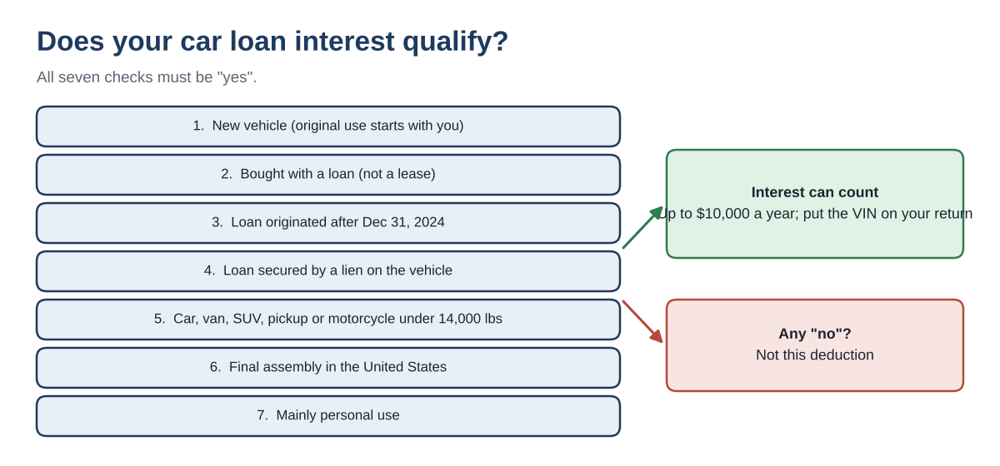
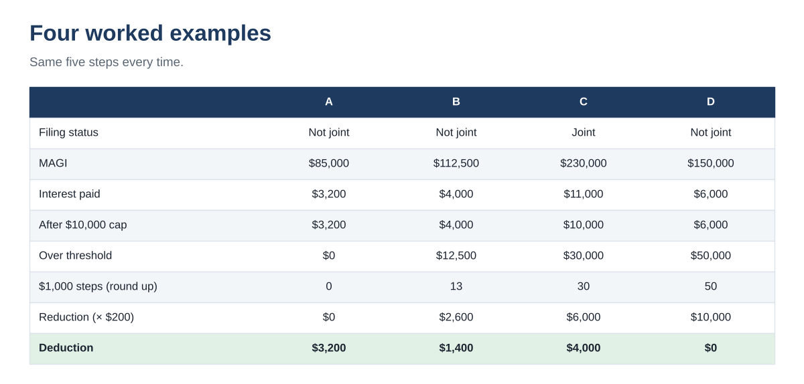

Car Loan Interest Deduction 2026: Who Qualifies and How to Calculate It (Up to $10,000)
↓ Get the free Excel + PDF kit for this article
Interest on a personal car loan used to be one of those things you could never deduct. That changed with the 2025 tax law. For tax years 2025 through 2028, many people who bought a new, US-assembled vehicle with a loan can deduct up to $10,000 of the interest each year, even if they take the standard deduction.
The catch is in the details: the vehicle has to be new, the loan has to be recent and secured by the car, the car has to be assembled in the US, and the deduction shrinks as income rises. This guide covers who qualifies, the five-step calculation and four worked examples.
Who this is for: people who financed a new car, SUV, pickup or motorcycle for personal use after 2024 and want to know, before filing, whether the interest they pay in 2026 lowers their federal tax and by how much.
Key facts
- Up to $10,000 of qualifying interest per year, for tax years 2025 through 2028.
- Available whether you itemize or take the standard deduction.
- Reduced when modified AGI (MAGI) is over $100,000 ($200,000 married filing jointly): $200 less for each $1,000 or part of $1,000 over.
- The vehicle's VIN must be on your return for each year you claim it.
- For 2025 returns the deduction is figured on Schedule 1-A (Form 1040), Part IV. Check the final 2026 form when it is released.
Does your loan qualify? Seven checks
All seven must be true. One "no" means the interest does not count for this deduction.

- New vehicle. Its original use starts with you. Used vehicles do not qualify, even if the loan is new.
- A loan, not a lease. Lease payments do not qualify.
- Loan originated after December 31, 2024. A loan from 2023 on a car you still drive does not count.
- Secured by a lien on the vehicle. A personal loan or credit card used to buy the car does not count.
- Type and weight. A car, minivan, van, SUV, pickup truck or motorcycle with a gross vehicle weight rating under 14,000 pounds.
- Final assembly in the United States. The brand does not matter; the assembly plant does.
- Personal use. A vehicle used in your business is a different deduction (on Schedule C, for example), not this one.
How to check final assembly
Look at the vehicle information label (window sticker) from the dealer: it lists the final assembly point. You can also enter the VIN in the free NHTSA VIN Decoder, which shows the plant of manufacture. Save a screenshot or copy of whichever you use with your tax records.
Refinanced? Interest on a refinanced qualifying loan is generally still eligible, up to the original balance. If you took cash out or added a borrower, ask your tax professional.
The calculation, step by step
- Interest paid. Add the qualifying interest you paid during 2026 from your lender's year-end statement. Subtract any part already deducted as a business expense.
- Apply the cap. Take the smaller of step 1 or $10,000.
- Income over the threshold. MAGI minus $100,000 ($200,000 if married filing jointly). If the result is zero or less, stop: step 2 is your deduction.
- Count the $1,000 steps. Divide step 3 by $1,000 and round up to a whole number. $12,500 becomes 13, not 12.5.
- Subtract. Multiply step 4 by $200. Step 2 minus that amount is your deduction. It cannot go below zero.
Four worked examples
| A | B | C | D | |
|---|---|---|---|---|
| Filing status | Not joint | Not joint | Joint | Not joint |
| MAGI | $85,000 | $112,500 | $230,000 | $150,000 |
| Interest paid in 2026 | $3,200 | $4,000 | $11,000 | $6,000 |
| Step 2: after $10,000 cap | $3,200 | $4,000 | $10,000 | $6,000 |
| Step 3: over threshold | $0 | $12,500 | $30,000 | $50,000 |
| Step 4: $1,000 steps (round up) | 0 | 13 | 30 | 50 |
| Step 5: reduction (× $200) | $0 | $2,600 | $6,000 | $10,000 |
| Deduction | $3,200 | $1,400 | $4,000 | $0 |

- A is under the income threshold, so all $3,200 of interest is deductible.
- B is $12,500 over. That rounds up to 13 steps, so $2,600 comes off and $1,400 remains.
- C paid $11,000, but the cap is $10,000. Joint MAGI is $30,000 over $200,000, so $6,000 comes off and $4,000 remains.
- D is $50,000 over. The $10,000 reduction wipes out the $6,000 of interest, so the deduction is $0.
The chart below shows how quickly the deduction fades. With $6,000 of interest and a single filer, the full amount holds up to $100,000 of MAGI and reaches zero by $130,000.

What it is worth in tax dollars
A deduction lowers taxable income, not your tax bill dollar for dollar. Multiply the deduction by your top federal bracket for a rough estimate. In example A, a $3,200 deduction is worth about $384 at a 12% bracket or about $704 at 22%. State tax treatment depends on your state.
Records and key dates
| When | What |
|---|---|
| Now | Save the purchase contract, loan agreement (shows the origination date and lien) and the window label or VIN result |
| Each month | Keep lender statements; they show interest paid |
| Early 2027 | Lender's statement of 2026 interest |
| April 15, 2027 | 2026 federal return due for most filers |
| 2025 to 2028 | Tax years this deduction applies to |
Keep these records generally for 3 years from the date you file the return that claims the deduction.
Common mistakes
- Claiming interest on a lease, a used car or a car bought with a personal loan or credit card.
- Assuming a US brand means US assembly (and the reverse). Check the label or the VIN.
- Forgetting the VIN on the return.
- Counting the same interest twice: once as a business vehicle expense and again here.
- Using total payments instead of interest. Only the interest part counts; principal does not.
You can download the ready-made Car Loan Interest Deduction Calculator 2026 for free in the Free kit download box below. It has the eligibility questions, an interest log, a three-input calculator with the phase-out math folded away and these four examples, with a 4-page PDF guide.
This article is for education only and is not tax, legal or financial advice. It does not cover leases, used or business vehicles, or state tax rules. The 2026 form and instructions may differ from 2025; confirm your situation with a qualified tax professional.
Free kit download
Tools to follow this article step by step. No sign-up needed.
- Excel workbook (.xlsx)Car_Loan_Interest_Deduction_Calculator_2026_EN.xlsx · 20 KB
- Step-by-step guide (PDF)Car_Loan_Interest_Deduction_Guide_2026_EN.pdf · 59 KB
Free to use for yourself and your own business; please do not resell or redistribute. General information, not tax, legal or accounting advice; check every figure against your own records.